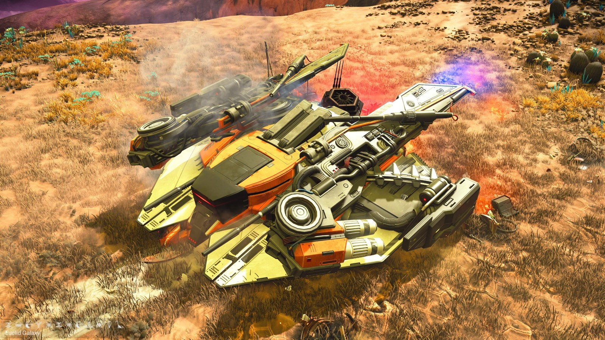
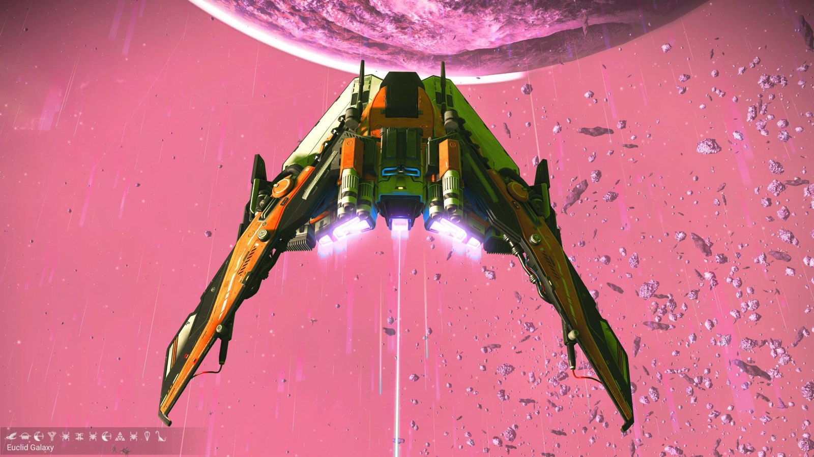
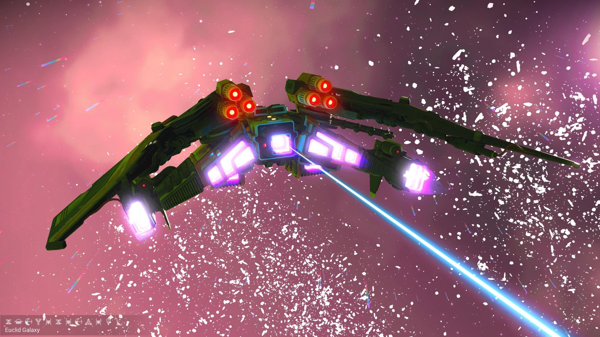
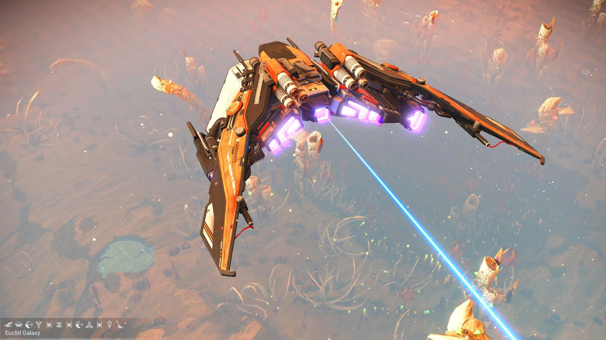
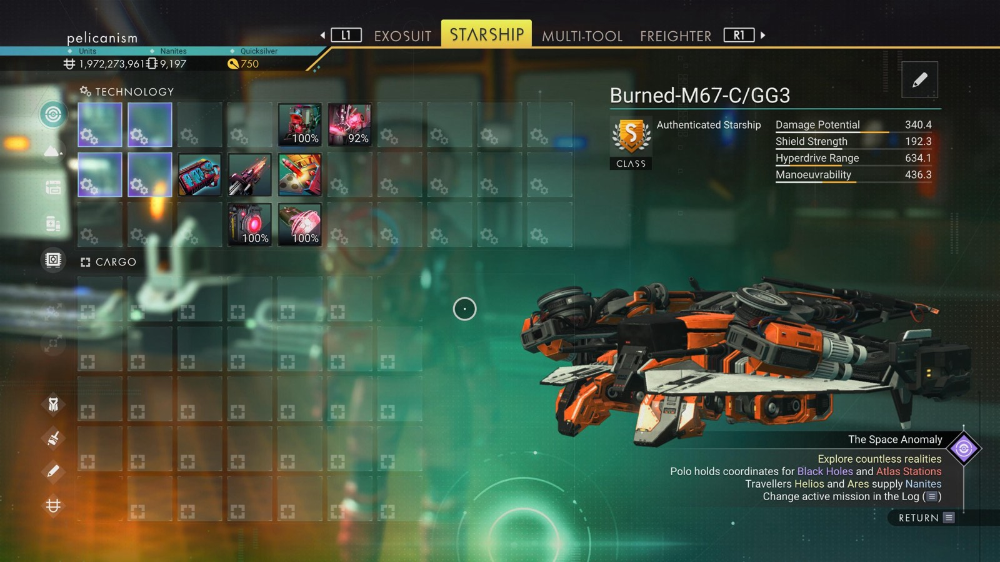

Waypoint 46 ★ 4 supercharged slots
Hetian-Sos






- Portal glyphs
- 204E7274F753
- Face · Sunset · Eclipse · Tree · Bug · Face · Bug · Eclipse · Atlas · Bug · Balloon · Diplo
- Distance from core
- 1,060,748 LY
- Jump from previous
- 1,815 LY
- Planet coordinates
- -37.56, -140.03
- Ship as found
- C-class, 33+22 slots
- Supercharged slots
- 4, in a 2×2 block
- S-class ship
- Burned-M67-C/GG3
- Damage
- 340.4
- Shield
- 192.3
- Hyperdrive
- 634.1
- Manoeuvrability
- 436.3